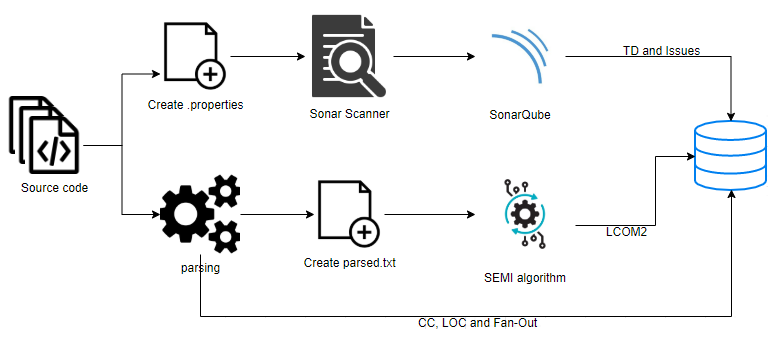

The vision of EXA2PRO is to develop a programming environment that will enable the productive deployment of highly parallel applications in exascale computing systems.
Technical debt(TD) is a concept in software development that reflects the implied cost of additional work caused by choosing an easy solution now instead of using a better approach that would take longer to implement
This metaphor can be used in HPC as well
We created a tool with a graphical user interface as well as this eclipse plugin in order to manage the TD in the most common programming languages of HPC (Fortran, C, and C++)
Our tool and plugin calculate the metrics and TD as is shown in the next figure, so you will need to have access to a SonarQube installation.
